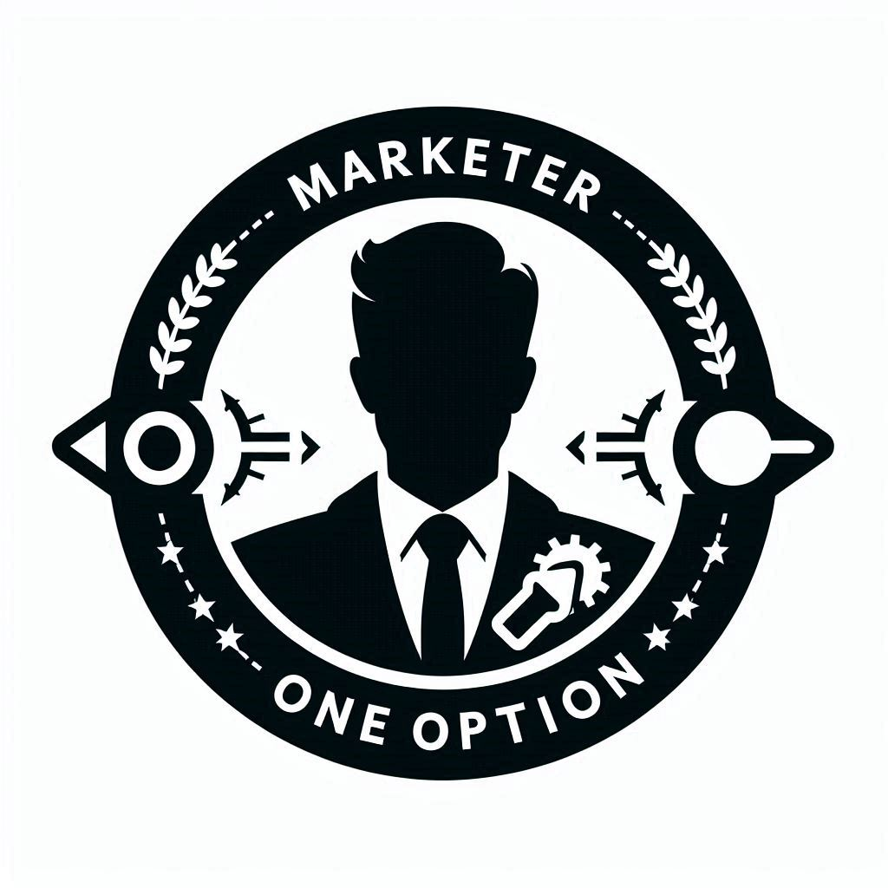
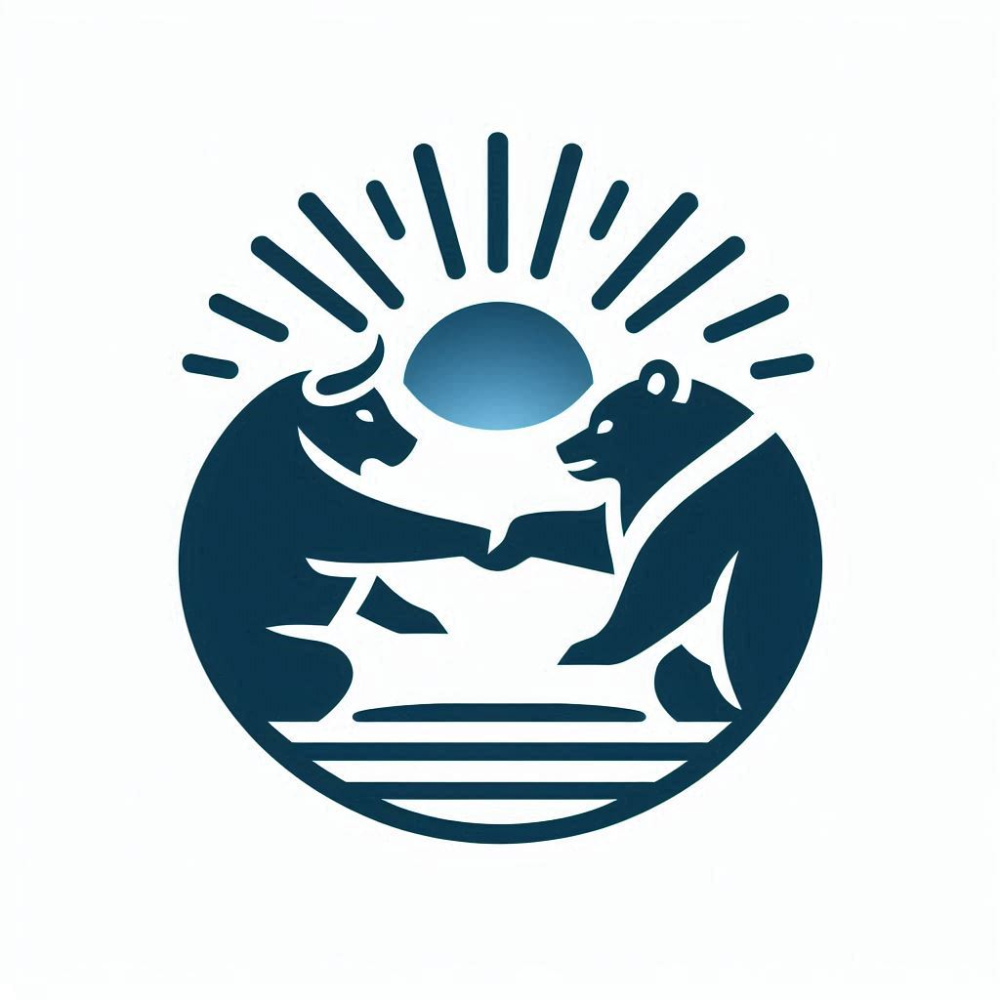
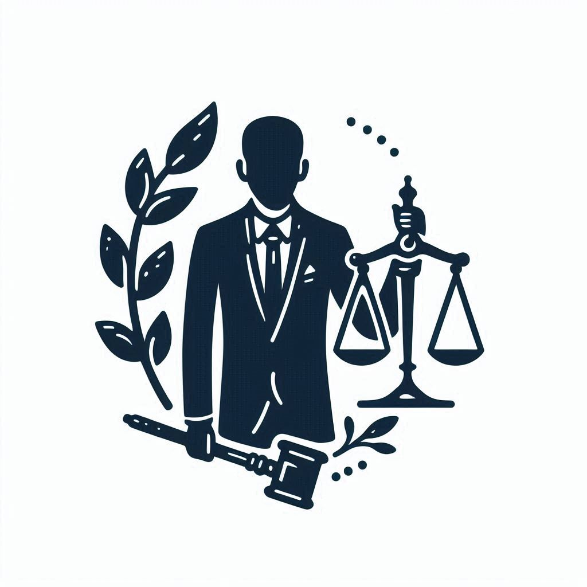

This is a startup — the beginning of a great journey! Currently, financial resources are limited, but there is plenty of enthusiasm and ideas here. Looking for enthusiasts ready to invest their time and energy into this endeavor!
Team Search
As you understand, a team is necessary, a team that can achieve everything.
Implementing et Nota can be done even with the laziest efforts, but
with adequate resources, it can be achieved in less than 1 year, or even in 1-2 quarters. The profits, despite their
underestimation in documents, will be colossal, which is obvious when talking about
technological projects.
Life — is work, even a startup — is work (if you happen to
think otherwise)... And it is a unique job, which is not given to everyone, but it is worth it for everyone who participates in it. But it is undoubtedly an adventure, albeit a dangerous one, that
will bring unforgettable memories.
I recommend starting with studying Continue... (et Nota).
If you understood the essence of the project and/or are very interested in it and KNOW (anything) and CAN (anything) help in its implementation, then you fit.
And if, in addition to this, you share the views of et Human — you are an ideal fit!
Some points for clarification:
Each named role is not fixed and will be clarified.
No unnamed role is intentionally omitted and/or unnecessary.
If you can bring (do bring) benefits to the startup but do not occupy any of the named roles, it means that your role has not been named.
Roles can overlap in one person.
Each role can be performed by more than one person.
CTO
Description:
Are you a visionary and tech enthusiast ready to create something incredible from scratch?
Do you want to work in a startup environment where innovation meets opportunity?
Join us as the Chief Technology Officer (CTO) and become the driving force behind our ambitious journey!
As CTO, you will:
Lead development: Manage the creation of our minimum viable product (MVP), turning ideas into a functional and user-friendly mobile application.
Technical vision: Define the functional requirements of the MVP and develop a technical strategy for their implementation.
Technology stack: Select the technological platforms and tools on which our product will be based.
Team management: Build and manage our technical team, attracting talented developers.
Build and scale: Scale the product after the MVP launch, improving functionality and ensuring a robust architecture for future growth.
Inspire and innovate: Bring innovative ideas, motivate the team, and drive technological solutions forward.
Collaborate and mentor: Work closely with founders and other team members, creating a culture of collaboration and mentoring junior developers.
Who you are:
Technical expert: Deep understanding of mobile app development, experience with various technologies and frameworks.
Innovative thinker: Passion for technology, ability to turn creative ideas into reality.
Problem solver: Skill in identifying issues and proposing effective technical solutions.
Team player: Willingness to collaborate, excellent communication skills, and ability to motivate the team.
Desired skills and experience:
Technical competence: Experience in mobile app development (iOS/Android), knowledge of cross-platform solutions is a plus.
Leadership experience: Willingness and experience in managing technical teams.
Strategic thinking: Ability to align technical strategies with business goals and ensure their successful execution.
Artificial Intelligence: Successful experience implementing AI technologies in mobile applications, including machine and deep learning.
Big Data: Professional skills in working with big data, its analysis and processing. Experience using platforms for storing and analyzing big data.
Security: Deep understanding and practical experience in ensuring security in mobile applications, including user data protection and privacy compliance.
Why join us:
Impact on outcomes: Your work will have a direct impact on the success of the product and the development of the company.
Innovative environment: Opportunity to work in a culture where creativity, collaboration, and continuous learning are valued.
Opportunity to become a co-owner: As an early team member, you will have the chance to earn a stake in the company and share in its success.
Flexibility and autonomy: Opportunity to experiment, innovate, and influence the technological future of the company.
Developer
Description:
Are you an enthusiastic programmer looking to contribute to the creation of an innovative product?
Looking for a dynamic startup environment where your ideas and skills will be valued?
Join the team as a developer and help bring ambitious plans to life!
As a developer, you will:
Develop and implement: Create code for our mobile application, ensuring its functionality and reliability.
Frontend and backend: Work with both the client-side and server-side of the application, ensuring their harmonious interaction.
Optimization and testing: Conduct code optimization and testing to ensure high product quality.
API integration: Implement integrations with external services and APIs to enhance the application's functionality.
Collaborate with the team: Work closely with the designer and CTO to implement the design and technical strategy.
Learn and develop: Continuously improve your skills and learn new technologies to enhance work efficiency.
Who you are:
Technical expert: You have experience in mobile app development and are familiar with modern programming languages.
Problem-oriented: You can find and fix issues in the code, ensuring its stability and performance.
Team player: You are ready to work in a team, share your ideas, and listen to others.
Eager to learn: You strive to continuously learn and grow, mastering new technologies and development methods.
Desired skills and experience:
Mobile app development experience: Practical experience in developing applications for iOS and Android.
Full-stack development: Knowledge of both frontend and backend technologies.
API integration: Experience working with RESTful APIs and other external services.
Development tools: Knowledge of tools and methods such as Git, CI/CD, Docker, etc.
Artificial Intelligence: Experience working with AI technologies and integrating them into mobile applications. Knowledge of machine learning and deep learning.
Big Data: Skills in working with big data, its analysis, and processing. Experience with platforms for storing and analyzing big data.
Security: Deep understanding of security aspects in mobile applications, including user data protection and ensuring privacy.
Why join us:
Impact on the product: Your work will directly affect the success of the product and user satisfaction.
Innovative environment: Join a team that values creativity, collaboration, and continuous learning.
Opportunities for equity in the company: As an early team member, you will have a chance to earn equity and participate in the company's success.
Flexibility and autonomy: Enjoy the freedom to experiment, implement your ideas, and influence the future of our technologies.
Marketer (CMO)

Description:
Are you a passionate marketer ready to help a startup achieve its ambitious goals? Looking for an opportunity to work in a dynamic environment where your ideas can have a direct impact? Join the team as a marketer and help promote the product to the market!
As a marketer, you will:
Develop marketing strategy: Create and implement marketing plans to promote the mobile app.
Market analysis: Research the market, competitors, and target audience to identify opportunities and threats.
Content creation: Develop creative materials and campaigns to attract and retain users.
SMM and SEO: Manage our social media and optimize content for improved visibility in search engines.
Collaborate with the team: Work closely with the designer and developers to align marketing efforts with product strategy.
Measure and analyze: Use analytics and metrics to assess the effectiveness of marketing campaigns and make improvements.
Who you are:
Innovative marketer: We are looking for a creative person who is eager to learn and apply new approaches to marketing. Experience is welcome, but your willingness to grow with us and share fresh ideas is key.
Analytically savvy: You can analyze data and make informed decisions based on it.
Communicator: You can clearly and effectively convey your ideas and concepts both within the team and to external audiences.
Team player: You are ready to work in a team, share your ideas, and listen to others’ opinions.
Desired skills and experience:
Social media management: Experience with social media platforms and analytics tools.
SEO and content marketing: Knowledge of best practices in SEO and content creation optimized for search engines.
Analytical tools: Experience with analytics tools, such as Google Analytics, and using data for decision-making.
Why join:
Impact on the product: Your marketing efforts will directly influence the product's success and its positioning in the market.
Innovative environment: Join a team that values creativity, collaboration, and continuous learning.
Opportunities to earn equity in the company: As an early team member, you'll have a chance to earn equity and participate in the company's success.
Flexibility and autonomy: Enjoy the freedom to experiment, implement your ideas, and influence the future of our marketing strategies.
Designer
Description:
Are you a talented designer looking to create a unique and memorable user experience? Are you seeking an opportunity to work in a dynamic startup environment where your ideas can come to life? Join the team as a designer and help create a product that will impress users!
As a designer, you will:
Create designs: Develop intuitive and visually appealing user interfaces for our mobile app.
UI/UX design: Design interfaces that ensure usability and aesthetics, considering users' needs and expectations.
Prototyping: Create interactive prototypes for testing and demonstrating functionality.
Visual design: Develop visual elements such as icons, illustrations, and graphics that align with the app's overall style.
Collaborate with the team: Work closely with developers and the CTO to implement the design in the final product.
Research and improve: Conduct user research, gather feedback, and make design improvements based on data.
Who you are:
Creative professional: You have a portfolio showcasing your experience and creativity in design.
User-oriented: You can think from the user's perspective and create designs that meet their needs.
Team player: You are ready to collaborate with other team members, share your ideas, and listen to their feedback.
Technically savvy: You are familiar with modern design tools and methods, such as Sketch, Figma, Adobe Creative Suite, etc.
Desired skills and experience:
Experience in UI/UX design: Practical experience in developing user interfaces and improving user experience.
Prototyping: Ability to create interactive prototypes for testing and presentations.
Web and mobile design: Experience in designing for mobile applications and web platforms.
Communication skills: Ability to clearly and effectively convey your ideas and concepts.
Why join:
Impact on the product: Your design will define the user experience and visual identity of the product.
Innovative environment: Join a team that values creativity, collaboration, and continuous learning.
Opportunities to earn equity in the company: As an early team member, you'll have a chance to earn equity and participate in the company's success.
Flexibility and autonomy: Enjoy the freedom to experiment, implement your ideas, and influence the future of our technologies.
Financial Officer (CFO)

Description:
Are you an experienced financial officer ready to help a startup effectively manage resources and achieve financial goals? Looking for an opportunity to work in a dynamic environment where your ideas and skills will be in demand? Join our team as CFO and help us build a sustainable financial foundation for our business!
As CFO, you will:
Manage finances: Develop and implement the financial strategy, manage the company's budget and cash flow.
Budgeting and forecasting: Create budgets, forecast revenues and expenses, and monitor the execution of financial plans.
Financial reporting: Prepare financial reports, analyze financial performance, and provide recommendations for improvement.
Attracting investments: Work on attracting investments, developing investment proposals and presentations.
Collaborate with the team: Work closely with other executives and the founder to align financial strategy with the overall company strategy.
Control risks: Evaluate financial risks, develop strategies to mitigate them, and ensure compliance with financial regulations.
Who you are:
Financial expert: You possess competencies in corporate financial management (including ventures such as startups) and have a deep understanding of financial mechanisms.
Strategic thinker: You can develop and implement financial strategies that contribute to business growth and development.
Analytically savvy: You can analyze data and make informed decisions based on it.
Team player: You are ready to work in a team, share your ideas, and listen to others’ opinions.
Desired skills and experience:
Financial management: Experience in financial management, including budgeting, forecasting, and financial analysis.
Investment attraction: Experience in attracting investments and presenting financial projects to investors.
Regulatory compliance: Knowledge of financial regulations and compliance requirements.
Why join:
Impact on the company: Your financial strategy will directly influence the company's success and development.
Innovative environment: Join a team that values creativity, collaboration, and continuous learning.
Opportunities to earn equity in the company: As an early team member, you'll have a chance to earn equity and participate in the company's success.
Flexibility and autonomy: Enjoy the freedom to experiment, implement your ideas, and influence the future of our financial strategies.
Technical Director (CTO)
Description:
Are you an experienced technical director ready to lead a talented team and oversee product development? Looking for an opportunity to work in a dynamic environment where your expertise and vision will be in demand? Join the team as CTO and help us build innovative solutions!
As CTO, you will:
Oversee product development: Manage the technical direction of the product, ensuring its scalability and performance.
Architecture design: Develop product architecture and technology stack, ensuring compatibility with the latest standards and technologies.
Team management: Lead the development team, providing mentorship and support in their professional growth.
Quality assurance: Establish processes for quality assurance and testing to ensure the product meets users' needs and expectations.
Collaborate with the team: Work closely with other executives and the founder to align the technical strategy with the overall business strategy.
Research and innovate: Keep abreast of industry trends, technologies, and tools, and implement them to improve product quality.
Who you are:
Technical expert: You possess competencies in software development and architecture, with experience in mobile applications and web technologies.
Strategic thinker: You can develop and implement technical strategies that contribute to product success and business development.
Leader: You can motivate the team and ensure effective collaboration between different departments.
Innovative: You are ready to experiment with new technologies and approaches.
Desired skills and experience:
Experience in software development: Practical experience in developing mobile applications and web platforms.
Management experience: Experience managing a technical team and leading product development.
Knowledge of technologies: Familiarity with modern programming languages, frameworks, and tools.
Why join:
Impact on the product: Your technical decisions will define the product's architecture and its future development.
Innovative environment: Join a team that values creativity, collaboration, and continuous learning.
Opportunities to earn equity in the company: As an early team member, you'll have a chance to earn equity and participate in the company's success.
Flexibility and autonomy: Enjoy the freedom to experiment, implement your ideas, and influence the future of our technologies.
Lawyer

Description:
Are you an experienced and/or responsible lawyer specializing in issues related to startups and technology companies? Are you looking for an opportunity to influence legal strategy and provide legal support at all stages of business development? Join our team as a lawyer and help us create a legal foundation for the startup!
As a lawyer, you will:
Legal support: Provide consultations on legal matters related to the startup's operations.
Document preparation: Prepare and analyze legal documents, including contracts, licenses, and agreements.
Intellectual property work: Protect the company's intellectual property rights, file patents and trademarks.
Risk management: Assess and manage legal risks, develop strategies to mitigate them.
Collaborate with the team: Interact with other team members to align business and legal strategies.
Compliance: Ensure the company's activities comply with current legislation and regulations.
Who you are:
Experienced professional: You have experience in corporate and technology law.
Analytical mind: You are able to analyze complex legal issues and propose practical solutions.
Communication skills: You can express your thoughts clearly and work well in a team.
Responsible: You are ready to take responsibility for the legal aspects of the company's operations.
Desired skills and experience:
Specialization in technology law: Knowledge of the legal regulations in the IT sector.
Experience with startups: Understanding the specifics of legal support for startup projects.
Experience in intellectual property: Knowledge of registration and protection procedures for intellectual property rights.
Why join:
Importance of the role: Your work will be crucial for protecting the company's interests and ensuring its legal sustainability.
Professional development: Participate in the development of a high-tech environment where each day brings new legal challenges.
Opportunities for career growth: As part of a young and ambitious team, you will be able to actively influence the future of the company and your career.
Flexibility and autonomy: Enjoy the freedom to implement your ideas, develop legal strategies, and influence business development.